|
注：本チュートリアルではSciex TripleTOF 6600装置のデータを使用しています。Thermo Q-Exactive Plusのデータを使用したい場合は、Skyline DIA QEというタイトルのバージョンをご覧ください。 |
本チュートリアルでは、質量範囲の異なる64のウィンドウでプレカーサーを単離する枠組設定（スキーム）と1時間のグラジエントにより、QqTOF装置 (6600 TripleTOF、Sciex) で取得されたSWATH-MSデータセットを用いて、Skyline を使用したペプチドと推測タンパク質の検出および定量化の取得後ターゲット分析を実施する方法を学びます。
使用するデータセットは、LFQBench調査で用いられた定量的ベンチマーク試料と同様に3種の生物プロテオームを一定比率で混合した定量的ベンチマーク試料が有機体3種のプロテオームを定義された比率で混合した試料から得られたものです (図)。
最初は、データ非依存性測定（DIA）のデータを解析するため、Skylineのパラメータを設定し、次に、生データファイルから定量化情報を抽出します。また、データ依存性解析（DDA）の結果をインポートしてスペクトルライブラリを作成し、DIAのデータを解析するための設定を行います。
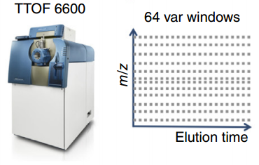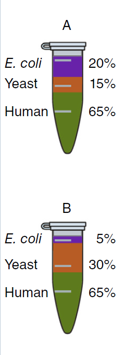
［図の出典：Navarro, P. et al. A multicenter study benchmarks software tools for label-free proteome quantification.Nature Biotech 34, 1130–1136 (2016)］
チュートリアルを始める前に、以下のzipファイルをダウンロードしてください。
https://skyline.ms/tutorials/DIA-TTOF.zip
この中のファイルを、以下のコンピュータ上のフォルダに解凍します。
C:\Users\brendanx\Documents
これにより以下の新しいフォルダが作成されます。
C:\Users\brendanx\Documents\DIA-TTOF
本チュートリアルを始める前にSkylineを使用していた場合には、Skylineをデフォルト設定に戻すことをお勧めします。デフォルト設定に戻すには、以下の操作を行います。
Skylineの現在のインスタンスの設定がデフォルトにリセットされました。
本チュートリアルではプロテオミクスのトピックを扱うため、ユーザーインターフェイスを必ず「プロテオミクス用インターフェイス」に設定してください。

これで、Skylineは、右上隅のプロテインアイコン  で示されるプロテオミクスモードで動作します。
で示されるプロテオミクスモードで動作します。
DIA分析の場合では、Skylineに抽出された定量トランジションすべてのピーク領域を積分するようにします。このためには、以下のように操作して下さい。
Skylineの操作に慣れているユーザーは、以下のすべての手順はメニューオプションから行うことができますが、DIAの通常のワークフローをより簡単に実行するための「ウィザード」を利用することにより、選択肢を選ぶことで順をおって解析することが可能になります。最初に、DDA解析で得られたペプチド・スペクトル・マッチの結果からスペクトルライブラリを構築します。次に、クロマトグラムを抽出する対象となるDIA測定のデータセットを指定します。ついで条件設定を行い、最後にクエリの対象を選びます。
ここでは、試料AとBのそれぞれについて測定した1回のDDAランの解析結果からライブラリを構築します。この解析結果は、Comet検索エンジンを用いて検索し、PeptideProphetにより検証したものです。Skylineが対応しているその他のDDA検索エンジンについては、https://skyline.ms/wiki/home/software/Skyline/page.view?name=building_spectral_librariesを参照して下さい。使用するファイルはinteract.pep.xmlです。このファイルはPeptidePrphetで作成されたもので、2つのDDAファイルのデータベース検索結果を含みます。
開始するには、次の操作を行います。
Skylineは現在のドキュメントを保存するか尋ねてきます。これは、コンピュータのどこのディスクドライブのどのフォルダで解析を実行するのかを決めておくためです。
すると、ペプチド検索のインポートウィザードが表示されます。
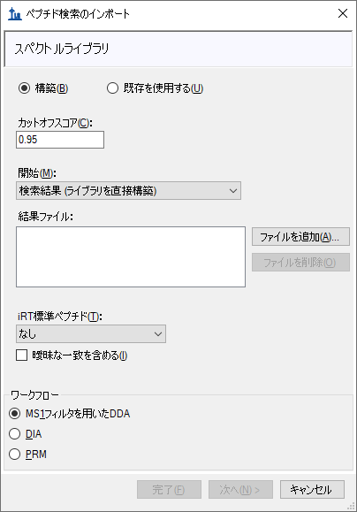
注：0.95は、DDAデータベース検索において、すべてのペプチド・スペクトル・マッチ（PSM）に対してPeptideProphetで設定した確率の閾値です。このチュートリアルで用いるデータセットでは、偽陽性率（false discovery rate, FDR）0.2%に相当します。データセットが異なればこの値は変更する必要があります。ユーザーが設定したFDR値を与える閾値をここに入力してください
ウィザードの [ スペクトルライブラリ ] ページは以下のようになります。

Skylineはライブラリ構築を開始し、[ ペプチド検索ライブラリの構築 ] フォームで進行捗状況が表示されます。ライブラリ構築が完了すると、これらの試料にスパイクされたBiognosys iRT標準ペプチドに基づいて、ペプチド検索結果のiRT値が校正されます。校正が成功すると、以下のようなライブラリ構築の要約が表示されます。

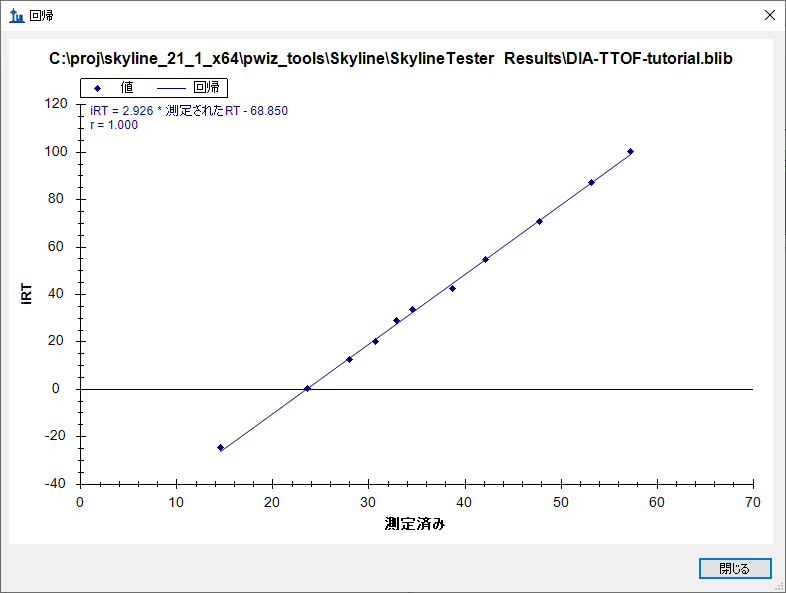
Skylineは、上記の回帰直線に追加されたペプチドに対してiRT標準値を再校正するかどうかをユーザーに尋ねます。
Skylineが曖昧に一致したペプチドの長いリストを表示します。これらのペプチドは、複数のペプチドにマッチするスペクトルが存在することから表示されたものであり、これらのスペクトルとマッチしたペプチドは定量的ターゲット解析には不適切なものです。
[ クロマトグラムを抽出 ] ページが表示されます。このページでは、クロマトグラムの抽出、ピーク検出、ピーク領域計算に使用するDIAデータファイルがどこにあるかを指定します。
[ 結果ファイルを参照 ] は以下のようになります。
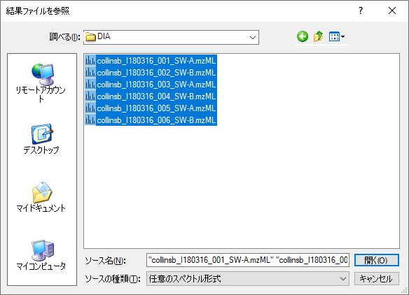
ペプチド検索のインポートフォームは以下のようになります。
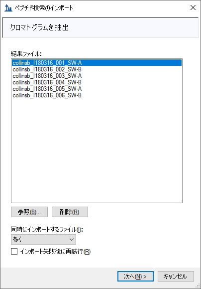
Skylineは、データファイル名を短縮して作業しやすくするため、ファイル名に共通するプリフィックス「collinsb_X1803_17」を削除するかどうかユーザーに尋ねます。
次の操作で [ 修飾を追加 ] ページをスキップします。
[ トランジション設定を行う ] ページでデフォルト値を以下のように変更します。
|
注：イオンタイプは、プリカーサーを意味する「p」を残してもかまいません。この設定では、SkylineはDIAデータファイルのMS1スペクトルから同位体を含むプリカーサーのクロマトグラムを抽出します。ただし、このチュートリアルを簡潔にし、処理時間を短縮して出力ファイルサイズを小さくするため、以下の説明ではDIAのMS/MSスペクトルから抽出したフラグメントイオンのクロマトグラムのみを対象とします。 |
[ ペプチド検索のインポート ] フォームは以下のようになります。
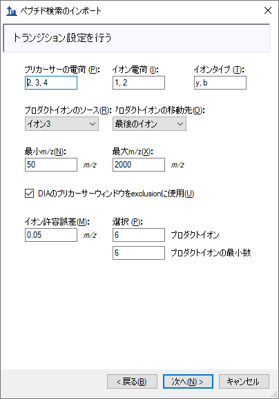
Skylineは [ フルスキャン設定を行う ] ページを表示します。
注：これらの抽出設定は、データ取得に使用した装置の種類や設定ににより変わります。至適な抽出設定は、それぞれのデータセットによって多少異なることがあります。この分析では、スペースを小さくするためにセントロイド化されたデータを使用します。したがって、「Centroided」を選択し、抽出の質量精度は「20」ppmを指定します。プロファイルモードデータでは、装置の分解能を指定できます。
デフォルト値を以下のように変更します。
次に、DIA測定に使用した装置で定義されているパラメータに従って新規に単離スキームを定義する必要があります。
注：この例では、400～1200 m/zの質量範囲をカバーする64に分割した可変幅のウィンドウを使用し、重複を1 m/zとして四重極の質量範囲の両端で0.5 m/zの除外マージンを設けるように設定してあります。
この操作で [ 単離スキームを編集 ] フォームが表示されます。ここでは以下の操作を行います。
[ 単離スキームを編集 ] フォームは以下のようになります。
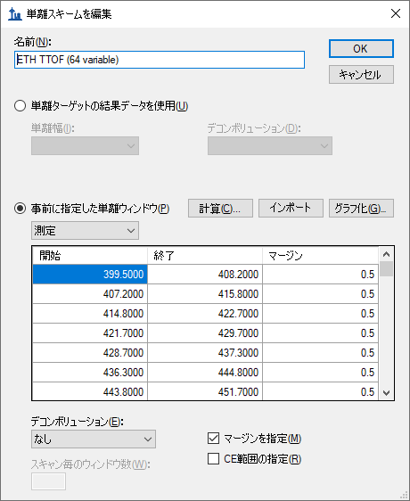
Skylineは、質量分析計で測定されたDIA単離範囲の [ 開始 ] および [ 終了 ] m/z値を表示しています。これらの値は1.0m/zずつ重複しています。この重複を相殺するため、Skylineは単離ウィンドウの各端に0.5m/zのマージンを追加しています。このマージンは、クロマトグラム抽出時に除外されます。これを表示するには、以下の操作を行います。
[ 開始 ] および [ 終了 ] 値が0.5m/z内側にシフトし、範囲が重複しなくなります。これらは、フラグメントイオンクロマトグラムの抽出するために、ペプチドプリカーサーm/z値を取得したスペクトルとマッチさせるときにSkylineが使用する範囲です。
単離スキームを視覚化するには、以下の操作を行います。
以下のようなフォームが表示されます。
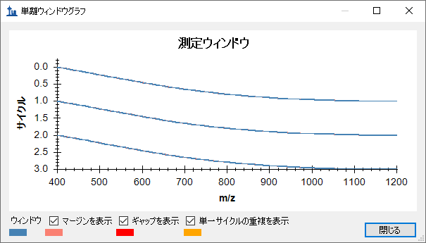
クリック・アンド・ドラッグして囲んだ長方形を使い部分拡大するか、マウスのスクロールホイールを使用して拡大すると、マージンの位置の詳細を見ることができます。[ マージンを表示 ] チェックボックスをオフにし、再びオンにすると、グラフのタイトルが [測定ウィンドウ ] と [ 抽出ウィンドウ ] の間で切り替わり、ピンクのマージンバーが非表示になったり再表示されたりします。[ ギャップを表示 ] の赤や、[ 単一サイクルの重複を表示 ] の黄色は、どちらもDIA単離スキームデザインのエラーであるため、この例では表示されません。
ペプチド検索のインポートウィザードは以下のようになります。
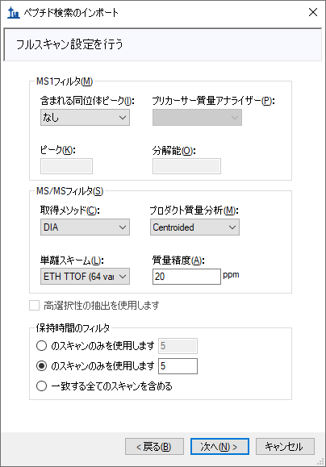
[ FASTAをインポート ] ページが表示されます。このページでは以下の操作を行います。
|
注：ここで、前に使用した「interact.pep.xml」ファイルがあるDDA_searchサブフォルダに移動して、ペプチド検索で使用した、検索対象のすべてのFASTAシークエンスファイルから構成される「napedro_3mixed_human_yeast_ecoli_20140403_iRT_reverse.fasta」をダブルクリックすると、検索対象とした全プロテオームの解析が可能になります。この選択によってずっと多くのターゲットペプチドが見つかるようになります。処理により長い時間がかかりますが、ほとんどの最新ラップトップで実行可能です。 |
ペプチド検索のインポートウィザードは以下のようになります。
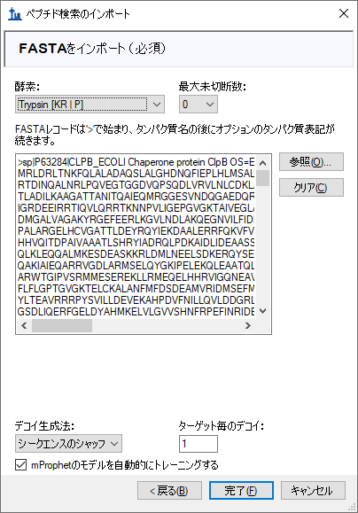
設定条件と使用したFASTAシークエンステキストを基に計算されたターゲットを記述したフォームが、以下のように表示されます。
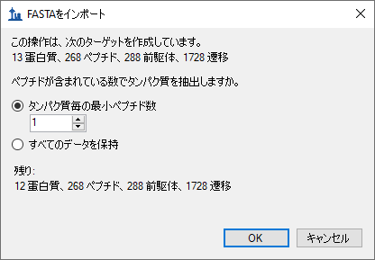
[ タンパク質毎の最小ペプチド数 ] フィルタを「1」にした場合、FASTAファイルで見つかった13個のタンパク質のうち、残りで表示されるタンパク質は12個になります。これは１つのタンパク質に帰属するペプチドがスペクトルライブラリの中に見つからないためです。[ すべてのデータを保持 ] をクリックすると、「1個の空欄のタンパク質が追加されます。」という警告が表示されます。ここでは前の設定に戻り、空欄のタンパク質がターゲットリストに追加されないようにして下さい。
Skylineはクロマトグラムの抽出を開始します。標準のi7 4コアプロセッサでは以下のようになります。
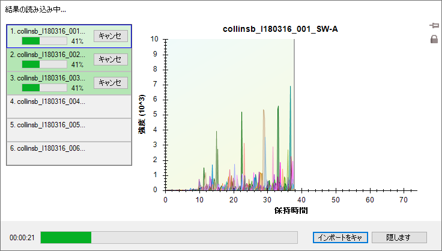
6コア以上ではすべてのファイルが並列処理され、2コアのほとんどのラップトップでは、インポートは2ファイルずつ処理されます。
インポートが完了すると、Skylineはペプチド検索のインポートウィザードの [ FASTをインポート ] ページで選択したmProhetモデルを表示します。これは以下のようになります。
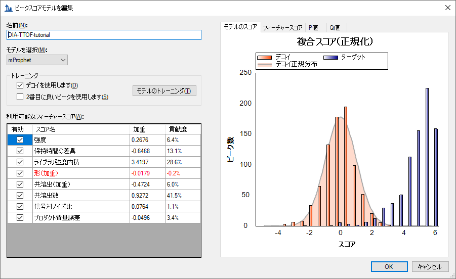
mProphetモデルでは、それぞれのクロマトグラムセットの中から、Skylineがデフォルトとして使用するスコアに基づき選んだ10個のベストピークを見直し、最も高いmProphetスコアを与える10個のピークを選びます。これらのピークのmProphetスコア（SkylineではDetection Z Scoreという名称になっています）は、用いたデコイペプチドシークエンスに対して同様な方法で得られる10個のベストピークのmProphetスコアの平均値の標準偏差が1.0になるように再計算されます。この値はq値となります（SkylineではDetected Q Valueという名称になっています）。
次に、どの試料がどの実験グループに属するかを定義する必要があります。
この実験では、2つの条件があります。条件AはE.coliが20％、酵母が15%、ヒトが65%のプロテオーム構成である試料、条件BはE.coliが5%、酵母が30%、ヒトが65%の構成です。
[ 注釈を定義 ] ウィンドウは以下のようになります。
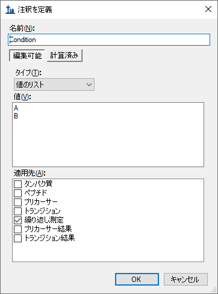
[ ドキュメント設定 ] ウィンドウに戻ります。
これでインポートした繰り返し測定に注釈を付ける準備ができました。
[ ドキュメントグリッド ] ウィンドウが表示され、このウィンドウを初めて使用する場合はタンパク質レポートが表示されます。
キーボードのEnter、矢印キーを使って移動し、A、B、1、2、3キーを使って以下のスクリーンショットで示すように試料に注釈を付けます。
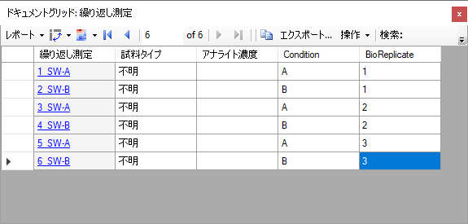
見やすくするため、Skylineウィンドウでデータを条件毎に分割して2つの枠で表示できるようになりました。
注：この時点でデータがまだインポート中である場合は、インポートが完了するまで待ってからドキュメントを保存します。
次に、クロマトグラフィーやその基になるスペクトルをマニュアルで検証します。この操作を行うには、保持時間とピーク領域表示を表示させる必要があります。
これで両方が表示されます。以下の操作を行うと、画面上でこの表示を最適に配置できます。
[ ライブラリの一致 ] ウィンドウにも、以下に示すように同じ操作を行えます。
注：このようにウィンドウをドッキングさせるには、マウスの矢印カーソルをドッキングアイコンの内部に置く必要があります。この場合は上部にあります。マウスの左ボタンを押したままドラッグし始めると、Skylineがドッキングアイコンと、マウスの左ボタンから手を放したときにウィンドウが配置される位置を示す透明な青い長方形を表示します。
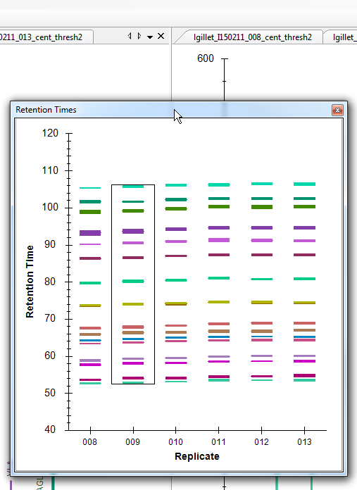 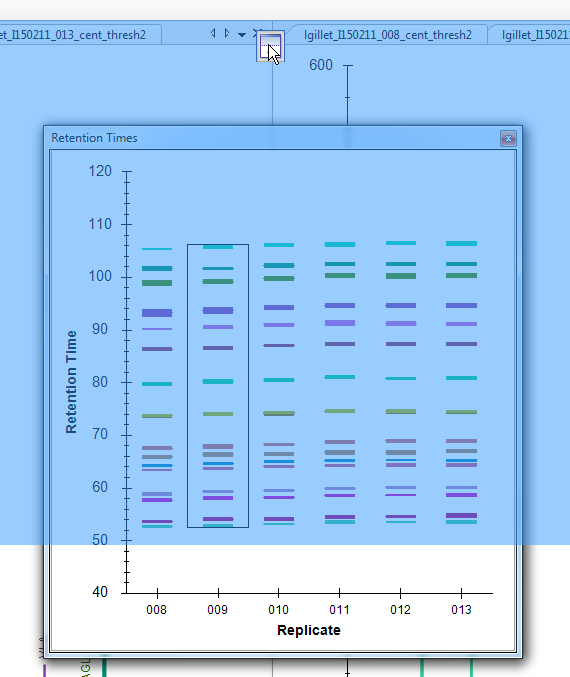
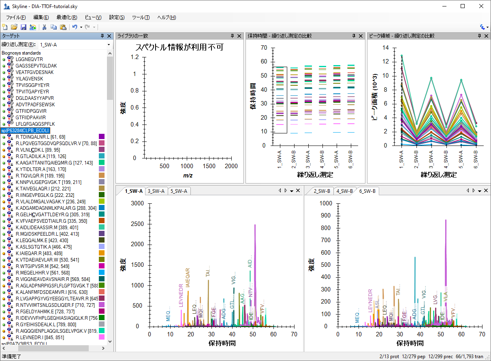
このタンパク質のすべてのペプチドがさまざまなプロット（クロマトグラム、ピーク領域、保持時間繰り返し測定グラフ）で表示されます。上記スクリーンショットは、あるタンパク質が選択された場合の例であり、このタンパク質のすべてのペプチドが各表示で要約されています（何も表示されない [ ライブラリの一致 ] ウィンドウを除く）。
[ ピーク領域 - 繰り返し測定比較 ] のプロットを見て、このタンパク質の発現量が異なっているように見えるでしょうか？E. coliの場合、サンプルAとBでは、E. coliタンパク質の量比が4:1になるように調整されていることを思い出してください。
下に示すように、すべての表示でこのペプチドに関する情報が表示されます。
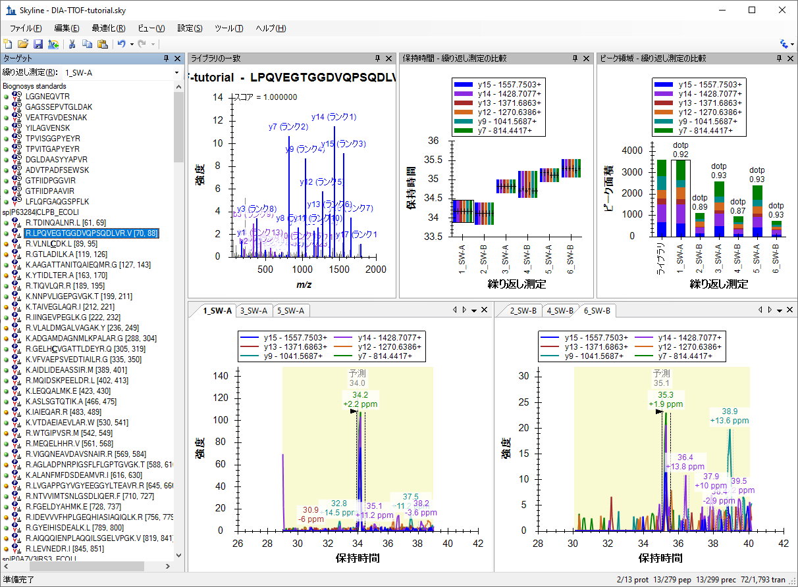
このタンパク質に属する残りのペプチドのピーク領域パターンを調べて下さい。このタンパク質のペプチドの定量パターンは、予想される差異発現パターン（4:1）と一致していますか？
注：ペプチドシークエンスに対して2つ以上の電荷状態がある場合、それらは別々に抽出され、スコアが付けられています。これらは、ペプチドシークエンスの横にある + をクリックしてから個々の電荷が異なるプリカーサーをクリックすれば参照できます。
タンパク質レベルと、ペプチドレベルのそれぞれの繰り返し測定ピーク領域を調べます。ピーク領域は予想される比率（1:1）と一致していますか？酵母タンパク質（1:2）ではどうでしょうか？
クロマトグラム曲線上にカーソルを合わせると、曲線上に曲線と同じ色の丸が表示されます。
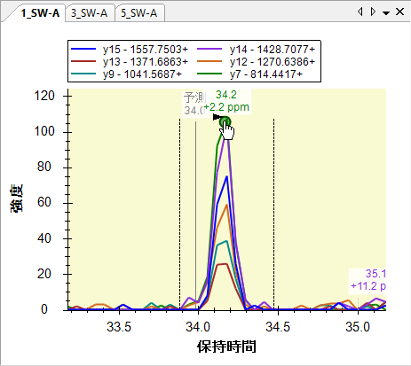
Skylineは選択したクロマトグラムポイントが抽出されたスペクトルを、選択したイオンを拡大して [ フルスキャン ] 表示を開きます。
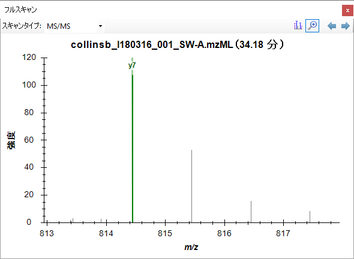
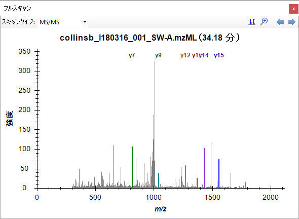
手作業でさらにデータを調べます（デコイを含む）。
質量精度と保持時間予測精度を調べると、最適な抽出パラメータが使用されたか、調整によって結果の改善が期待できるかを判断できます。
この操作によってデータセットの質量誤差分布が表示されます。抽出ウィンドウ（±20 ppm）はさらに最適化できるでしょうか？一般的には、平均差±3の標準偏差で十分です。ただし、両端の数字が高く、ヒストグラムが途切れているような場合は、抽出ウィンドウを広げた方がいいかもしれません。
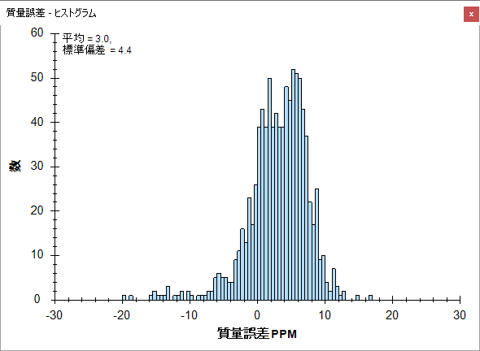
分布には、0周辺と5周辺とピークが2つあるように見えることに注意してください。これをよりよく理解するには、これが6回のランすべてでの質量誤差値であることを知っていると有用です。
この確認操作により、平均値は-0.1～5.9、標準偏差値は3.4～4.3であることがわかります。最大値を選び、平均 + 3 * 標準偏差 = 5.9 + 3 * 4.3 = 18.8PPMという簡単な計算により、20PPMの許容誤差がこれらのデータが要求するもののかなり優れた概算であるようです。
デコイの質量誤差を表示する場合は、以下の操作を行います。
iRTペプチドとそれらのライブラリにおけるiRTの値に基づいてターゲットペプチド保持時間の予測に使用する線形回帰を表示するには、以下の操作を行います。
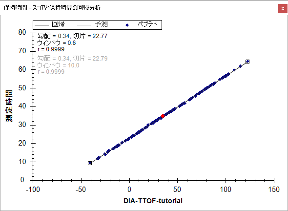
これにより、このデータセットでの予測保持時間からのずれが表示されます。この分析に対し、抽出ウィンドウ（±5分）はさらに最適化できるでしょうか？デコイも確認してみましょう。
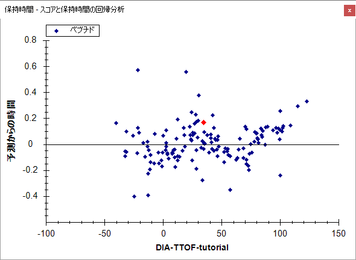
注：このチュートリアルのスペクトルライブラリは同じ試料を同時に測定した結果を用いて構築しました。そのため、保持時間予測の精度は非常に高くなっています。異なる装置、異なる時間、あるいは試料が異なる場合は、構築したスペクトルライブラリの保持時間の誤差はもっと大きくなると考えられます。
ここまでのSkylineによるデータ処理に全般的に大きな問題があるかどうかについて検証してきました。作成されたmProphetスコアモデルには必要なすべての評価スコアがつき、ランダムマッチの程度を評価するのに用いられた標的ペプチドシークエンスとデコイペプチドシークエンスに対するマッチの分布も充分に分離していました。RTの抽出に使用された許容範囲を±5から±3に狭くできたのではないかと思うかも知れませんが、現在の設定でも明らかにうまくいっており、作成されたmProphetモデルは許容できるように見えます。
ペプチドが数百種類にも及ぶ場合には、１つ１つのペプチドについてマニュアルで分析するのは時間がかかり、間違いを起こし易くなります。このチュートリアルで行っている解析を、３つの種すべてのFASTAファイルを対象とすると、いわゆるproteome-wide解析となり、数万のペプチドを解析することになります。このような場合は、個々のペプチドについて比較するより、何らかの方法で群間比較を行い、興味深い変化をしているペプチドあるいはタンパク質についてさらに詳細な解析を行うことが一般的です。
Skylineで簡単な2郡間比較を実施するには、以下の操作を行います。
[ グループ比較を編集 ] フォームは以下のようになります。
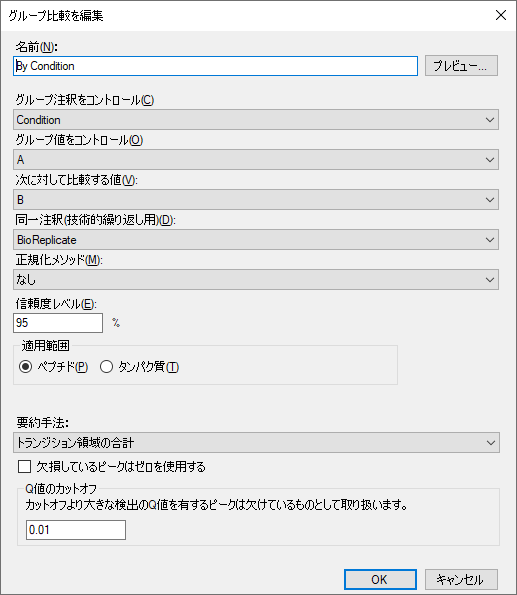
今作成したグループ間比較の結果を表示するには、以下の操作を行います。
AとBの試料混合物を比較した場合の、ペプチド倍率変化と調整されたP値（偽発見率FDRの推定値）を表示する表が表示されます。
どの生物種からのものか、またその予想比率（ヒト1:1、酵母1:2、E. coli 4:1）を念頭に、表内の複数のペプチドについて推定されている倍率変化を調べます。調整されたP値を調べ、予想される結果について考えてみましょう。
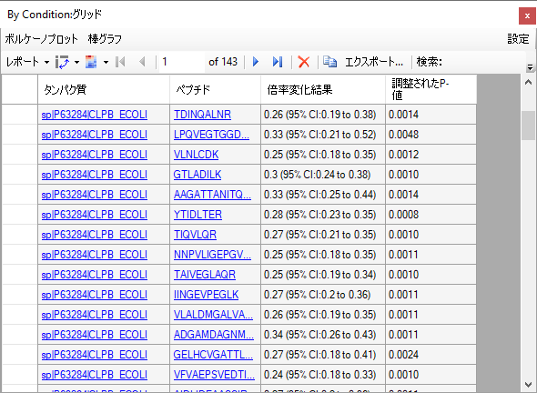
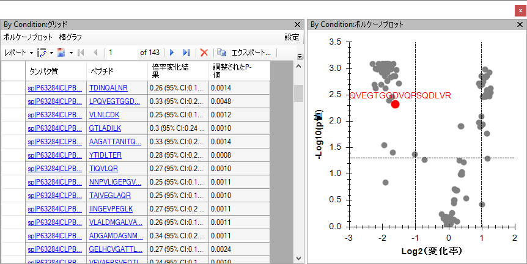
表示されたボルケーノプロットでは、変化している点の多くが、予想される倍率変化の周辺に集まっており、また、5% FDRを示す水平線の上にあることがわかります。どの点がどの生物種に属するのかを明確にするため次の操作を行って下さい。
フォームには、以下のように一致するタンパク質名とともにペプチドの一覧が表示されます。
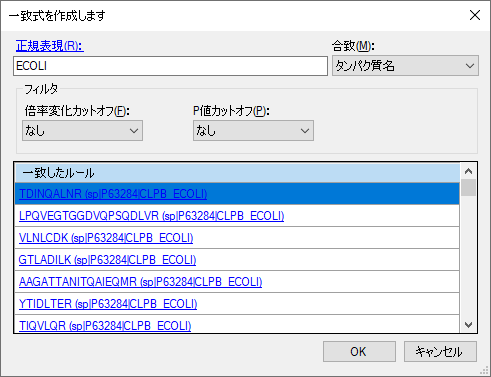
これで [ ボルケーノプロット形式 ] フォームは以下のようになります。
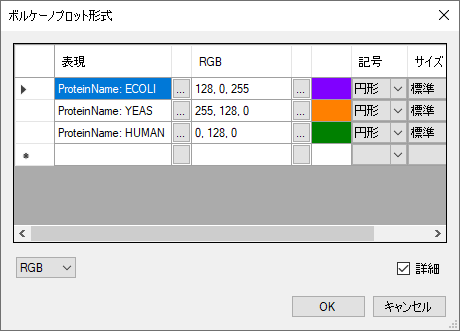
これでボルケーノプロットは以下のようになります。
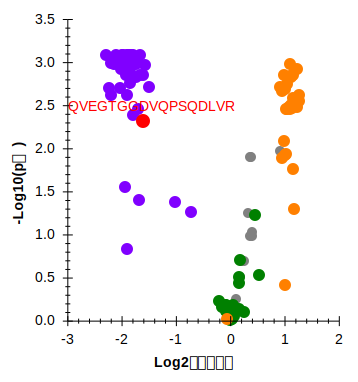
まだグレーのドットがいくつか残っていることに注意してください。これらのドットのどれかをクリックすると、 [ ターゲット ] 表示でそのペプチドが選択され、ボルケーノプロットでクリックしたドットが赤に変わります。また、任意のドットにマウスのカーソルを合わせると、そのドットに関する詳細情報が表示されます。これらの操作で、グレーのドットはiRT標準ペプチドであることがわかります。これらの標準ペプチドの情報は、以下の操作を行うと、グリッドとボルケーノプロットから除去できます。
すると、ボルケーノプロットからグレーのドットが削除されます。同様にして、タンパク質名に他のフィルタを適用することで、ボルケーノプロットに1つの生物種のペプチドだけを表示させることもできます。
Skylineはまた、倍率変化値に対して（未補正）信頼区間の誤差バーを示す棒グラフを表示させることもできます。それらは多重仮説検定により補正されてはいませんが、測定のバラツキを知るのに役に立つでしょう。棒グラフで倍率変化値を表示させるには、以下の操作を行います。
棒グラフがボルケーノプロットの上に表示されます。もうすこし表示が広くなるように、以下の操作を行います。
グラフは以下のように表示されます。
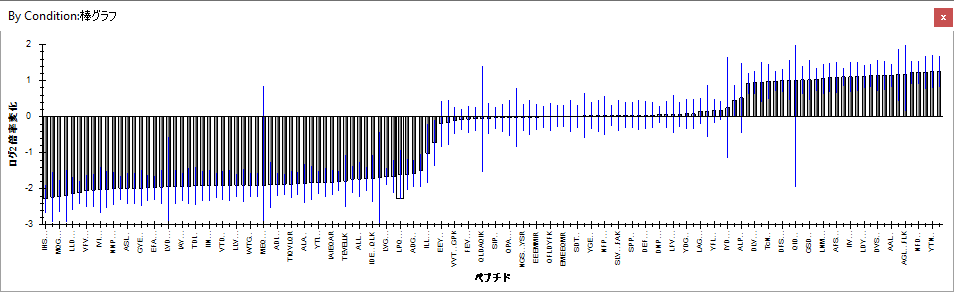
ボルケーノプロット同様、個々の棒をクリックすると [ ターゲット ] 表示で選択されます（グラフ内のさまざまなペプチドがどの生物種からのものかを確認できます）。
11のターゲットタンパク質（iRT標準とデコイの結果を除いています）のタンパク質レベルの倍率変化結果を表示するには、以下の操作を行います。
Skylineはすぐに棒グラフとボルケーノプロットを変更します。棒グラフには、棒の数が予想していた11本ではなく9本しかないことがわかります。これは、現在の設定では、t-検定を行うために必要な数の測定値が揃っていない状態であり、欠損値（Q値のカットオフ0.01による）に対応することができないためです。Skylineは欠損値を持つターゲットタンパク質を除去して表示しています。これを修正するには、以下の操作を行います。
これで棒グラフが11のタンパク質すべての倍率変化推定値を、以下のように表示するようになります。
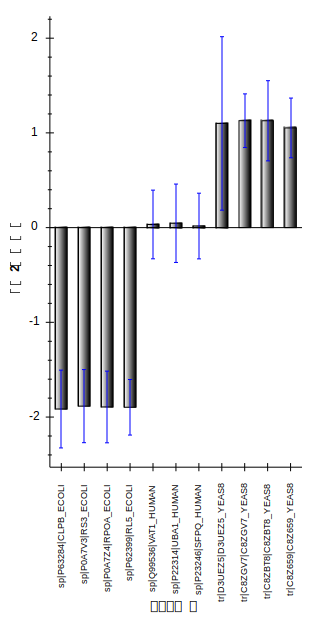
また、MSstatsのような高機能の統計ツールも使用することができます。MSstatsは、Skyline Tool Storeからインストールできます（Skylineメニューで [ ツール ] > [ ストア ] を使用するか、Skylineインストールウェブページで [Tool Store] ボタンをクリックして下さい）。インストール後は、Skylineの [ ツール ] メニューから直接MSstatsを実行するか、以下の操作を行って、RまたはRStudioでMSstatsを実行してください。
おめでとうございます。これで、DIAデータを使用して、Skylineでプロテオームの差異発現比較解析を行うチュートリアルは終了です。ここでは、ペプチド検索のインポートウィザードを利用して、DDAペプチド検索データからスペクトルライブラリを構築する過程から始めて、定量的DIA測定結果からクロマトグラムを抽出し、mProphetの統計学的ピーク検出モデルを使用して、ピーク選択を改善する方法と群間比較に使用するピーク領域値で偽陽性率（false discovery rate）を使用するためのq値を割り当てるところまで学びました。最初の段階で、DIAのデータの質を質量誤差と保持時間の回帰分析により評価することを学びました。最終段階では、Skylineを用いて単純な2群間比較を行う方法について学びました。Skylineは、インタラクティブな群間比較グリッド、ボルケーノプロット、棒グラフを表示することでユーザーの理解を容易にし、結果を検証することができます。また、MSstats inputをエクスポートし、MSstatsを使用して異なる統計検定を行うことも可能です。次の段階として、全ProteomeのFASTAファイルを用いて、多くのターゲットを対象にした解析を同様に行うことや、プレカーサーイオンを対象に含めることで異なるレベルでの定量解析（MS1スペクトルを用いるプレカーサーイオン）を行うこともできます。あるいは、ご自分の測定結果を用いて定量解析を行ってもいいでしょう。